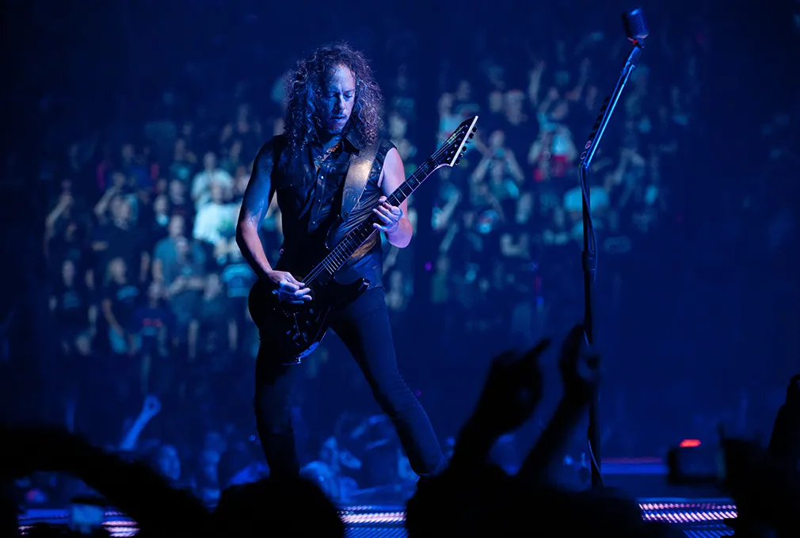
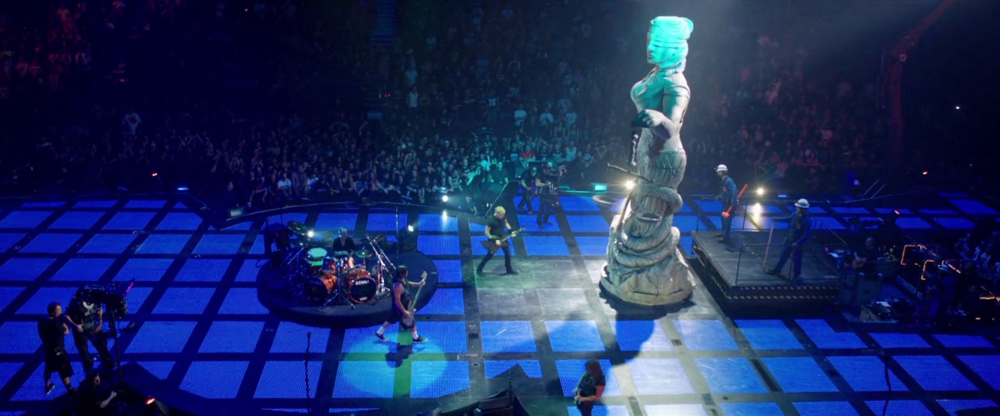
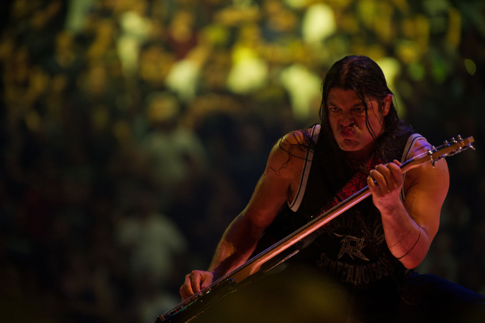

A Through The Never a Metallica 2013-as koncertfilmje, amely egy rendkívüli stadionkoncert és egy fiktív történetszál kombinációja. A film különlegessége, hogy a koncertfelvételek valós Metallica fellépéseket mutatnak, miközben a történet egy fiatal roadie kalandjait követi.
A film rendezője Nimród Antal, a hang- és fénytechnika pedig a zenekar ikonikus stadionturnéihoz hasonló, monumentális vizuális élményt biztosít. A Through The Never egyszerre mutatja be a Metallica koncertenergiáját és egy izgalmas, feszült történetet, amely kiegészíti a zenét.
A filmben a Metallica legnagyobb slágerei hallhatók, beleértve a Enter Sandman, Master of Puppets és One számokat, valamint a 2011-es Death Magnetic album dalait. A vizuális effektek és a történetszál új dimenziót adnak a klasszikus stadionkoncert élményének.
Koncertfilm – Dalok
| Jelentősebb dalok a filmben |
|---|
| Enter Sandman |
| Master of Puppets |
| One |
| Battery |
| Nothing Else Matters |
| Fade to Black |
| The Day That Never Comes |
| All Nightmare Long |


